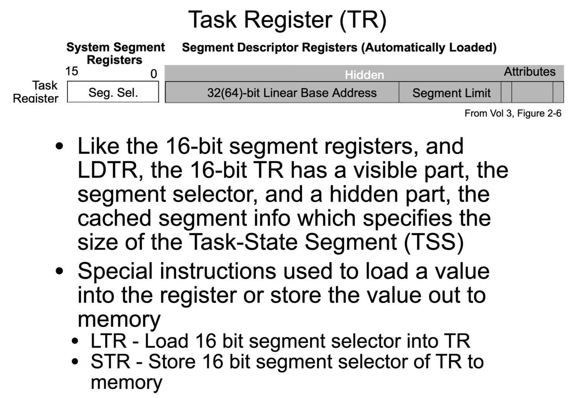

dt -b (nt!_KTSS64) TSS_address - interpret the memory at that address as a Microsoft _KTSS64 structure type
Tasks were a hardware mechanism to support multi-tasking, by saving/restoring task state (e.g. registers).
Tasks are not in use in x86-64 anymore.
Task State Segment (TSS) is still (and MUST be) in use by the OS. it is consulted when task switching occure due to interrupt.

TR stores number of byte from base of GDT to the TSS.
in the below image, GDTR ends in 0xafb0, GDTL is 0x57, that gives 0xafb0+0x57 = 0xb007.
each record in GDT is 8 byte, 0x57/0x8 = A (10 decimal), meaning there are 10 records with indices 0 to 9.
the last record ends at 0xb007.
in the example below TR stores 0x40, devided by 8 byte gives the 8th record, as shown. ***importent - TR is a segment selector, first 3 bits are RPL and TI, in order to correctly point at the index, right shift by 3 must be preformed and not devide, TR acctually stores record number and not number of bytes from base of GDT, it is just left shifed by 3.
In 64 bit there is no Task Gate.
TR points at TSSD in GDT, then the hidden catch is filled, and the TR will point to the TSS.
The stack address where the temporary task switch info is stored is in a kernel address, where one cannot temper.
IST - Interrupt Stack Table.
Back in 32 and 16 bit, the TSS was used as its name implies, now in 64 bit, it merely points to a protected stack location.
One can find TSS records in GDT in windbg.
Base address can be conjugated with given info.
After address is found, one can examine the TSS structure. notice the address.